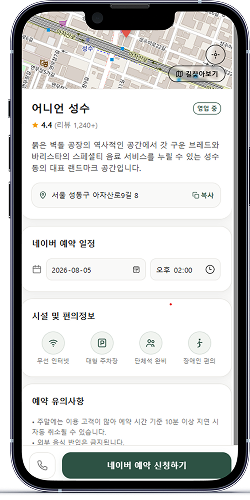
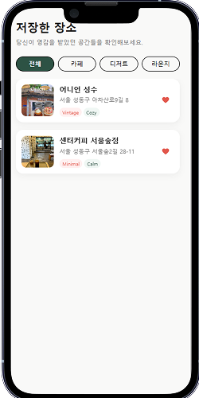
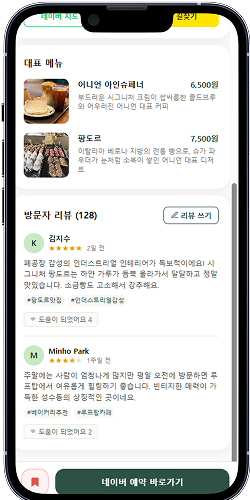
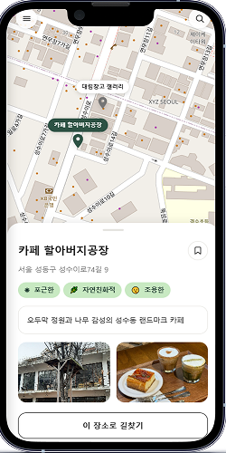
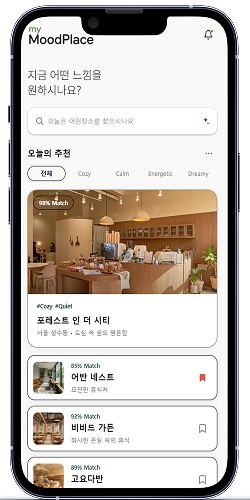
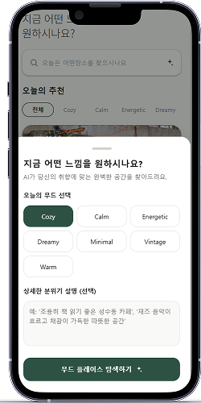
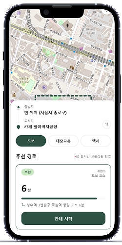
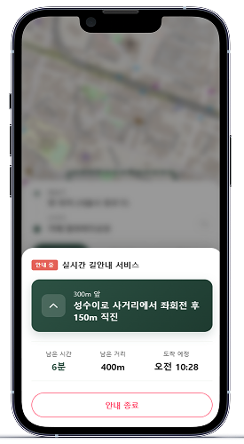
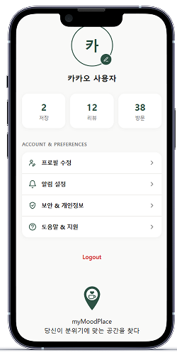
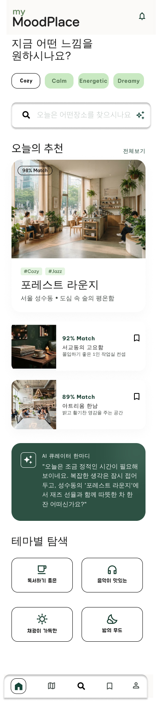

김서연 · 24세 · 여성 · 대학생
"수업이 끝난 오후, 친구들과 만나기 전에 사진찍기 좋은 카페를 검색하고 싶어요"
감성적인 인테리어와 포토스팟이 있는 공간을 선호하고, SNS에 공유할 만한 분위기를 기준으로 카페를 고릅니다.
my moodplace
하늘 아래, 걷다가 마주치는 골목의 온도까지 —
MoodPlace는 "지금 이 기분"에 맞는 카페를 찾아줍니다.
서비스 소개 및 기획 의도
SNS 앱의 세부 분위기·스타일 필터링은 늘 어딘가 부족했습니다.
원하는 분위기·인테리어·목적을 직접 조합해서 찾을 수 있는 검색 구조가 없었고, 취향에 완벽히 맞는 공간을 빠르게 찾아주는 정렬 방식도 없었습니다. moodplace는 그 빈틈에서 출발했습니다.
“목적별 맞춤 탐색으로, 가장 어울리는 카페를 더 빠르고 정확하게”
김서연 · 24세 · 여성 · 대학생
"수업이 끝난 오후, 친구들과 만나기 전에 사진찍기 좋은 카페를 검색하고 싶어요"
감성적인 인테리어와 포토스팟이 있는 공간을 선호하고, SNS에 공유할 만한 분위기를 기준으로 카페를 고릅니다.
박민준 · 29세 · 남성 · IT 회사원
"업무에 집중할 수 있는, 조용하고 정돈된 공간을 빠르게 찾고 싶어요"
콘센트와 좌석 간격 같은 실용 정보, 방문 목적에 맞는 조용한 분위기를 기준으로 카페를 판단합니다.
SNS가 활발해진 이후, 단순히 "카페"가 아니라 "분위기 좋은 카페"를 찾는 비중이 꾸준히 높아졌습니다.
SNS 확산 이후 분위기 중심 카페 탐색 관심도 변화 (기획 컨셉 지표)
그래서, 기획했습니다.
맞춤형 무드 필터와 핵심 기능
Cozy, Calm, Energetic, Dreamy 같은 무드 태그와 상세 분위기 설명을 함께 입력하면, AI가 취향에 맞는 공간을 매치율로 우선순위화해 추천합니다.

현재 위치에서 카페까지 도보·대중교통·택시 경로를 비교하고, 실시간 길안내로 남은 시간과 거리를 확인하며 도착합니다.

주소, 영업시간, 시설·편의정보는 물론 대표 메뉴와 방문자 리뷰, 네이버 예약까지 한 화면에서 확인하고 바로 예약할 수 있습니다.

마음에 든 공간은 하트로 저장해두고, 카페·디저트·데이트 등 카테고리 태그로 다시 필터링해 나만의 무드 리스트를 만들어갑니다.

Figma 기반 프로토타입 화면 흐름
스플래시로 시작해 지금 원하는 느낌을 무드 태그와 문장으로 직접 설명합니다.
무드 매치율 순으로 카페를 추천받고, 테마별 탐색으로 다시 좁혀갑니다.
메뉴, 리뷰, 시설 정보를 확인하고 네이버 예약까지 한 화면에서 진행합니다.
이동 방식을 고르고, 실시간 길안내로 남은 거리와 시간을 안내받습니다.
마음에 든 장소는 카테고리별로 저장해 다음 방문을 준비합니다.
저장·리뷰·방문 기록을 한눈에 보고 계정 정보를 관리합니다.






옆으로 스크롤해서 전체 흐름을 볼 수 있어요 →
서비스 링크 · QR 코드 · 기술 스택
앱스토어 미배포 상태를 고려해, 실제 웹앱 주소를 QR 코드로도 연결해두었습니다. 아래 버튼이나 QR로 지금 바로 my moodplace를 체험해보세요.
moodplace001.vercel.app스캔해서 바로 열어보기